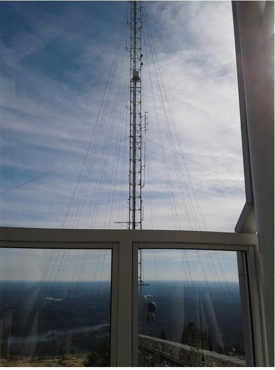

MARCH 2019 TOTR
Newsletter Of The Alford Memorial Radio Club
March Right
Outside And
Put Up That
Antenna!
March 2019 Contents
President’s Notes
Meeting Information
Membership News/ Birthdays
Member Spotlight– Barry Kanne W4TGA
Tip of the Month– Pat Deloe, N4MPC
Agnes Scott Calendar/ Merchandise/ Net #s
Ask a Turnip
Buy Swap Sell, Peach Corner Recipe
Top of St. Mtn Tower and Repeater Pictures

March 2019 President’s Notes
Message for Mike, Rules of the Road Each of these points for drivers can be directly related
to ham radio.
In the same way that we have traffic rules
for road usage and the Golden Rule for the good 1. STUDY AND LISTEN TO CONTACTS
of society, there are regulations and operating
2. DECIDE WHAT YOU NEED TO DO WHAT
procedures governing our hobby. These rules
TASKS– THINK EQUIPMENT AND YOUR
are designed to be followed in order to make it
DEVELOPMENT AS AN OPERATOR.
easier to live with our fellow ham operator. The 3. FIND AN ELMER
regulations are the law, and the operating proce-
dures are mutually agreed upon guidelines. Both 4. LISTEN TO THAT ELMER
are important to make our hobby a pleasant one 5. PURCHASE AND FIND YOUR EQUIPMENT
enjoyed by many hams.
6. ONGOING STUDYING IS REQUIRED AS
There isn’t anything more frustrating to
YOUR INTERESTS CHANGE AND YOUR
me then the person driving in front of me failing
UNDERSTANDING DEEPENS.
to use their turn signal. The same frustrations
can be found daily in ham radio. Once you have 7. LEARN FROM MISTAKES. Hemingway said “I
been issued with a license, it is essential that you
have learned a great deal from listening carefully.”
know how to operate your equipment, and ap-
The first task for the transmitting Ham is “listen first”.
propriately communicate on the amateur bands, It is only by listening that one can get some idea of the
before attempting to go on the air. It is essential basics of transmitting. What is propagation like on a
that you listen to amateurs making contacts, so band, and is a particular frequency is in use?
you can learn how contacts are made.
Remember ,a frequency may sound clear to you but a
weak distant station may be using the frequency.
A person with their technician license is Listening at various times builds up an understanding
an amateur radio learner’s permit. Get help if
of how conditions vary at different times of the day,
you are unsure of your equipment . Mistakes can night and year. By listening, one hears actual contacts
be very costly.
and learns the normal procedures.
According to Google, “How can I be a good
Speak clearly and slowly, especially when giv-
driver,” results with the following list:
ing your call sign. Don’t be afraid to say “This is
KK4KHS, looking for a signal report. Anyone around?”
1. GIVE YOURSELF A HEAD START. It pays to Have fun, it’s a hobby.
know the basics before your first lesson. ...
See you at the meeting!
2. CHOOSE THE RIGHT TRANSMISSION. ...
3. SHOP AROUND FOR AN INSTRUCTOR. ...
Mike Smith,KK4KHS
4. LISTEN TO YOUR INSTRUCTOR. ...
5. BUY YOUR OWN CAR TO PRACTISE IN. ...
6. STUDY THE THEORY FROM THE START. ...
7. LEARN FROM YOUR MISTAKES.
2
Meeting Information April 11, 2019
Annistown Road Baptist Church 4554 Annistown Rd Snellville, GA 30039
Fellowship Hall in the Back of the Church.
The Original Text Messaging Machine - A Deeper Look
Steve, N4TTY and Nick, N0NCQ
AMRC Repeaters
146.760– On St. Mtn. approximately 110 ft up the TV
transmission Tower. ECHO LINK available on the 76.
441.8125– on Stone Mountain under the dome.
145.450– Exchange Park
444.250– Exchange Park
224.760– Exchange Park
Repeater Manager Barry Kanne W4TGA
radio.w4tga@gmail.com
3

AMRC MEMBERSHIP
Happy March Birthday
January 1, 2019=
from AMRC
107
Welcome New Member:
Linda Schreiber KJ4NYT
Become a member of AMRC or renew by
visiting our website http://totr-
radio.org/membership/memapp.htm
Click here.
To Make Changes to your membership
(new address, email, or phone number)
please email
Steve Garrison
Membership Chairman
Steve.n4tty@gmail.com
Update or renew your amateur radio li-
cense with the FCC at their website for
May all your Ham gear Wishes
free http://wireless.fcc.gov/uls/
index.htm?job=home. Click Here.
come true!
Update or renew your ARRL
membership at their website http://
www.arrl.org Click here
Club Dues are Due in January.
Dues help support our repeaters and
club activities. Thank you for promptly
renewing.
Steve Garrison
N4TTY
Membership Chair
4
Barry Kanne, W4TGA
AMRC Spotlight Member of the Month
Hello and thanks for dropping by. I began my ham radio adventure in 1953 in my
Phoenix high school. My work life kept me in radio first with Motorola and then in
the radio paging industry as a system supplier and manufacturer.
The photo is in our 34 foot fifth wheel RV which is equipped with both HF (Flex-
6300) and VHF/UHF with a self contained 12 volt power system to support the ra-
dios.
Much of my time is devoted to ARES activities in my home county near Atlanta.
Last summer we traveled with the RV to the California. Of course the Flex 6300
was there to keep us in touch with friends both old and new as we roll around the
country. On our travels we found the Metter Roadrunners, a group of RV hams
from central Georgia. We look forward to meeting up with them in the coming
months.
More later,
73 - Barry
Barry is our Repeater Manager. He is talented and ensures that we all
can use the repeaters in excellent condition. Thanks Barry! Barry has
been instrumental in getter us on DMR. Barry is a member along with
his wife Judy, K4JKL. Above taken from his QRZ page. Update your QRZ
page and email Gretchen at gretchelby@gmail.com. You maybe the next member spotlight.
.
5
Larry Whited
Larry is a member of
AMRC and GARS. He
is the Gwinnett EC for
Gwinnett ARES.
Contact Larry on the
air and ask for his QSL
Card.
Send the Totr your QSL card and
we will feature it in the Totr. Or if
you have received a unique card ,
share it with the club by sending it
to gretchelby@gmail.com
2 Tips of the Month
Pat DeLoe, N4MPPC
1. Do you find your hotspot to the internet is degraded but the receive
signals are fine? You may have a de-sense problem with the router Wi-
Fi receiver due to overload from your HT. Try placing the hotspot near
the Wi-Fi router and run the HT on the lowest power to see if that
solves the problem. Test by using DMR parrot on TG 310997. Check
packet loss into the hotspot from your HT vs packet loss back from the
internet. You should see no packet loss from either direction. ‘
2. Try the digital multi mode reflector QuadNet and connect by DMR, D-
Star, Fusion, Echolink, or Peanut.
D-star: XRF757A, XLX735A, XLX307D, XLX049D
DMR: Brandmeister TG 31012, DMR+reflector4541, DMR gatewayXLX307
Fusion: roomYSF 37099
Echolink: conference *WWARG*
Peanut: XRF757A
For Additional Quadnet info and times Click Here
6


2019 AMRC Officers and Committee Chairs
Mike Smith KK4KHS
Steve Vogel W4PSV
President
Public Information
smithrm71@yahoo.com
svdec@bellsouth.net
Greg Mann KM4RKT
Vice President/ Apparel Mgr
Steve Garrison N4TTY
km4rkt.greg@gmail.com
Membership
Steve.n4tty@gmail.com
Anthony Acker ND4AA
Secretary
Zargon W4PSB
Field Day Chair
Zack Buersmeyer KN4HKB
Treasurer
Gretchen Mann W1MKW
Totr Newsletter Editor
Gene Blackburn N4UJ
gretchelby@gmail.com
W4BOC Trustee
g.blackburn@ieee.org
Frank Haynes KV4SP
Barry Kanne W4TGA
VE Team Chair
Repeater Manager
barry.kanne@gmail.com
If you would like to serve on a
committee or assist a chair per-
son in their work, contact Mike
Jim Penland N4RAR
KK4KHS. It is a great way to
DeKalb ARES EC/ Counsel
make contacts and learn. Don’t
jwpenland@jwpenland.com
be shy.
7
March 2019 Calendar
Sunday
Monday
Tuesday
Wednesday Thursday
Friday
Saturday
1
2Breakfast
7AM Hardees
Turnip
Turck Net
11pm
3
4
5
6
7
8
9 Breakfast
AMRC
Emm Comm
7am Hardees
State ARES
Sunday
Rag Chew
Meeting
Night Net
8pm
7pm
Turnip
DMR Net
Truck Net
8pm
11pm
10
11
12
13
14 AMRC
15
16 Breakfast
AMRC
Emm Comm Monthly
7am Hardees
Sunday
Rag Chew
Meeting
Night Net
7pm
8pm
Turnip
7pm
Truck Net
DMR Net
11pm
8pm
17
18
19
20
21
22
23 Breakfast
AMRC
Emm Comm
7am Hardees
Sunday
Rag Chew
Turnip
Night Net
Truck Net
8pm
7pm
11pm
DMR Net
St Patrick’s
8pm
Day
24/31
25
26
27
28
29
30 Breakfast
AMRC
Emm Comm
7am Hardees
Sunday
Rag Chew
Turnip
Night Net
Truck Net
8pm
7pm
11pm
DMR Net 8pm
8


AMRC Merchandise
Public Information
Jackets
Polo shirts
Tshirts
Hats
By: Steve Vogel W4PSV
2019 Schedule Agnes Scott
Name tags
Observatory and Shack Open House
Emergency Vests
8-9 pm :
Contact Greg Mann KM4RKT
March 22: William A Calder Spring Equinox
km4rkt.greg@gmail.com
Concert
Cash, Credit/Debit, Checks
April 12: Alumna Lecture and Open House
Google Pay, and Apple Pay
May 3: Kevin Marvel (American Astronomical
Society)
Accepted.
For More Info about Agnes Scott
Partnership or Events, contact
Steve Vogel W4PSV
svdec@bellsouth.net
February 2019 NET NUMBERS
To participate as Net Control for the Sunday Night Net , please go to the
club’s website at https://www.totr-radio.org. Scroll down and Click on the
link to the Net Control sign up sheet or click here. Thanks for your help.
9
Ask a Turnip
With this operating technique the pile up runs smoother
and more efficiently, and more contacts can be squeezed
Q. What is normally meant by operating a transceiver in
into the air time made available by Mr. M and the unpre-
“split” mode? And why would you run “split” mode?
dictable atmospheric conditions of our planet. However,
this is not the end of the story.
Single sideband (SSB) operations on the HF bands some-
times require slightly cleverer operating techniques than
In order for split mode to work well everyone has to play
we’re accustomed to with most FM or digital ops on the
along. Just as with your imagined scenario, there will be
VHF/UHF bands. Operating in split mode is one of those
other stations dialing along and discovering this excep-
techniques that can come in handy in a difficult situation.
tional DX contact opportunity over time. And those sta-
Here’s the scoop…
tions will jump into the fray, transmitting in ignorance on
14.250 MHz instead of 14.255 MHz because that’s where
Suppose you’re dialing across the 20-meter band one fine
they hear Mr. M transmitting. The whole problem again
sunny afternoon and you hear a station calling from Mauri- rears its ugly head.
tius, an island off the east coast of Madagascar. What a DX
catch that would be! But after hearing the snippet of the
So, Mr. M has to run the pile up properly. The highly de-
station operator’s call followed by “QRZ,” your receiver gets sired station should include the split mode information in
blasted with a pile of strong, local transmissions, all in re-
its transmissions very frequently so that new stations
sponse to the Mauritius call. And some of the US stations
stumbling across the party understand the game. For in-
go on and on for many seconds, striving annoyingly to
stance, Mr. Mauritius may want to state at the end of a
make their call signs heard to Mr. Mauritius, the highly de- contact, “This is 3B8ABC listening up 5 kHz. Listening up
sired, rare DX contact. As a result of the discord of strong-
five. QRZ?” This way, any new stations wishing to at-
signal responses in the US, no one was able to hear the rela- tempt contact will know to set up a split mode and trans-
tively weak signal of Mr. Mauritius responding with one
mit 5 kHz above the listening frequency.
particular station ID that he desired for a contact. Every-
Other splits are common, perhaps 10 kHz or even greater,
body loses because of this operational inefficiency – even
and the split may be listening down as well as up, as in
though contacts will be made within the chaos, a greater
our example. If you wish to set up a split mode for your
number of contacts could be achieved in the same time with transmissions, just be sure to make the split greater than
smarter ops.
the typical SSB bandwidth of 3 kHz so that there is abso-
There is a better way to handle such a pile up. The highly
lutely no overlap of transmit and receive SSB bands. Also
desired station that is running the pile up can operate in
make sure that both frequencies in the split are not other-
split mode. In split mode the operator adjusts the trans-
wise in use, so to avoid interfering with other ongoing
ceiver to transmit on one frequency and receive on a differ- QSOs.
ent frequency. With the other stations complementing this Answer: The transceiver is set to different trans-
operational arrangement, the pile up chaos is reduced sig-
mit and receive frequencies
nificantly. Follow the reasoning…
You’ll find split mode in operations quite common, espe-
Mr. Mauritius establishes a 5 kHz split: He transmits on
cially when propagation is good and the DXers have come
14.250 MHz, but he receives on 14.255 MHz.
out to play.
You can ask a Turnip a question on
The US stations complement by transmitting on 14.255
MHz while receiving on 14.250 MHz, exactly inverse of Mr. the Turnip Truck Net. Net is held
Mauritius. Mr. Mauritius picks out a US station ID heard
every Saturday at 11pm. We crank
on 14.255 MHz and responds with a transmission on 14.250 up the truck around 10:30 for pre
MHz. The strong-signal US stations are no longer transmit- net Rag Chew. Please join us.
ting on 14.250 MHz, so the weak signal of Mr. Mauritius is Once you check in you will always
heard by the US stations without all the strong QRM mask- be known as a Turnip. Disclaimer:
ing his signal. The lucky US station identified by Mr. Mauri-
tius gets the contact, the other stations hear the station ID
Turnips are not the brightest. This
and end their wild transmissions to await the next “QRZ”
may not be a typical answer you
utterance from Mr. Mauritius so they can try again.
may receive on the turnip truck.
atmospheric conditions of our planet. However, this is not
BYOTJ!– Bring your own turnip
the end of the story.
juice!
10

Peach Corner Monthly The AMRC sadly announces that
Recipe: Baked Ham
Maurice Tanner, KJ4NYV became a
Sandwiches
silent key February 10, 2019.
Maurice and Katherine KJ4NYU
16 slices of bread, crusts removed, butter on one
have been long time members of the
side
Alford Club and have been active in
Place 8 slices in a 9x13 pan, butter side up,
many of the clubs activities. Our
Cover each slice with a piece of ham and a slice of condolences to Katherine and his
Velveeta cheese.
family.
Cover with remaining slices of bread butter side
down (Just like a ham sandwich).
Pour the following mixture over the sand-
wiches:
5 eggs, slightly beaten
1tsp onion juice
3 cups of milk
Salt and pepper
Cover with butter bread crumbs (make them
from crusts
Bake 1.5 hours at 325 degrees
BUY SELL SWAP
Cut into squares.
For Sale :
Breakfast or lunch, perfect with some fruit or a
salad.
1. Contact Doug KX4IB. For Sale ICOM 51A+2
HT Dual Band D-STAR to be sold with accesso-
Can make the night before. Refrigerate overnight ries. Ownerhas 2 HTs and wants to sell his
before baking in the morning.
ICOM. You can contact Doug on QRZ and he
Send your favorite recipes into Gretchen Mann
will be happy to send pictures and prices.
W1MKW, gretchelby@gmail.com
Thank you for your interest. Great Radio.
2. Contact John W5NNH. For Sale TYT Quad
Band Mobile Rig with Quad Band Antenna.
Contact Seller on QRZ for specifics.
Wanted:
1. Pignology Piglet Bluetooth adaptor. Please
Contact John W5NNH if you have one to sell.
11

(Right) This is the GPTV antenna tower
showing the light strings that
cause us problems during November and
December. If I remember correctly
the W4BOC receive antenna is the sec-
ond one up on the left side above
that white cylinder. As you can see it is
VERY close to the light strings.
(Above) The front of our club equipment rack showing from bot-
tom to top:
Black front of Power Supply with two meters, silver end of the
duplexer for the DMR repeater, the thin (1U) rack mount Mo-
torola DMR repeater, the Kenwood 146.76 repeater, The S COM
repeater controller for the Kenwood repeater, and at the top the
power amplifier for the 146.76 repeater.
(Right) The BACK of the club equipment rack proving
that radio is NOT really wireless! It also shows why it
might take a bit of time to find a bad cable.
Up Close And Personal With The Stone
Mountain Repeater Equipment:
Tom WA4GIM and Barry Kanne,
W4TGA
12


HRO Atlanta, Georgia
6071 Buford Hwy NE,
Law Offices of
Atlanta, GA 30340
Ruth Primm and
Store Hours Mon -Sat
(10am– 5:30pm)
James Penland
770-263-0700 (Phone)
770-263-9548 (Fax)
www.northlakelawfirm.com
atlanta@hamradio.com
Come to breakfast for food &
conversation every
Saturday at 7am at
Hardees located at 5259
Stone Mountain Hwy Stone
Mountain, GA 30087.
Thanks Karen Whited, AB4NW.
Junior (left) listens to CQ calls
while keeping the paper warm
for Karen and Larry. Send up
your picture of your pet playing radio.
We will put them in the Totr.
13